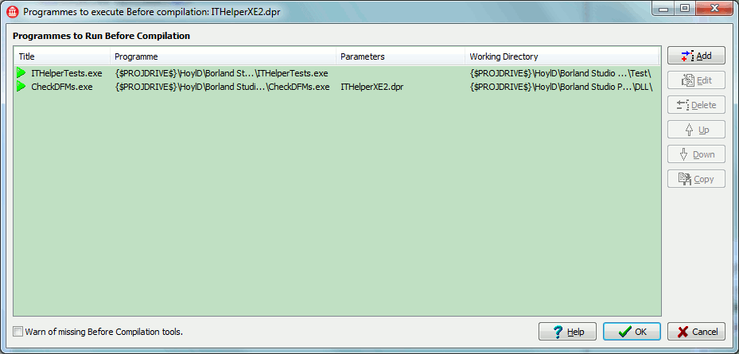
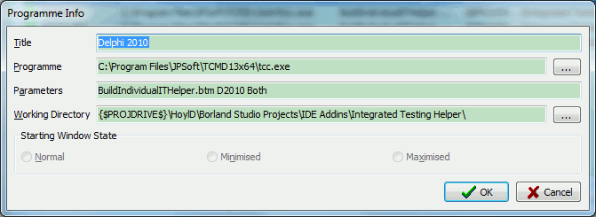

The same dialogue is used for both the before and after tools. In this dialogue you can configure command line tools to be run before or after each project compilation.
For instance, you might want to run a set of unit tests before compiling the code ( if you use project dependencies, this works well) and run deployment code after, say building a setup programme for installation, after compilation.
If you press the Add button or select an existing item and press Edit you will be presented with the below dialogue for editing the information associated with a tool.
Title - This is a descriptive title you can enter to help you understand what the tool does, especially if you run the same executable / batch files multiple times but for different reasons.
Programme - This is the executable or batch file you want to run. It does not need double quotes if the file name has spaces.
Parameters - These should the any parameters your executable or batch file requires to run. You do need to place double quotes around parameters that have spaces in them.
Working Directory - This is the directory where the application should be run from and act as the applications current directory. This also does not need double quotes for paths with spaces.
Starting Window State - This is not applicable to this application.
The above dialogue allows the use of a number of macros that are expanded by the system. These have been implemented to allow the information to be more portable in line with moving all the project information into their own INI files along side the project file. The available marcos as as follows:
This dialogue remembers its size and position separately for both the before and after tools.
Like the Project Options this information is stored in an INI file with the extension .ITHelper along side the project file.